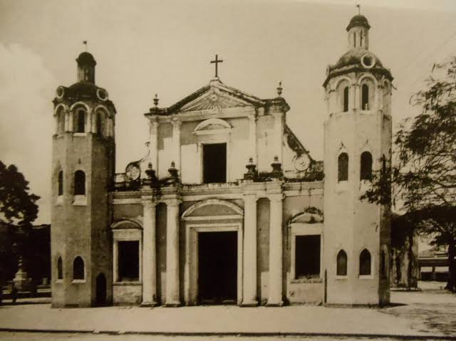

Era la religion oficial de Mexico.
Poseia grandes extensiones de tierra y riqueza economica.
Administraba escuelas, hospitales, asilos y beneficencia.
Registraba nacimientos, matrimonios y defunciones.
Contaba con privilegios legales, considerado como fuero eclesiastico.
Mantenia estrecha relacion con los grupos conservadores.
Participo en los debates sobre la organizacion del pais.
Controlo gran parte de la enseñanza con principios catolicos.
Principal propietaria de tierras, otorgando prestamos.
Guiaba las normas morales, las costumbres, las festividades y parte de la vida comunitaria.
Su poder fue cuestionado por los liberales, quienes impulsaron las Leyes de Reforma para eliminar sus privilegios y nacionalizar sus bienes.

Movimiento obrero